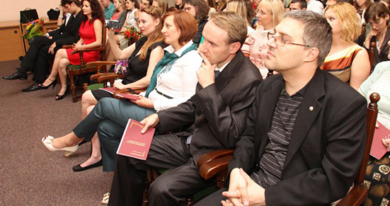
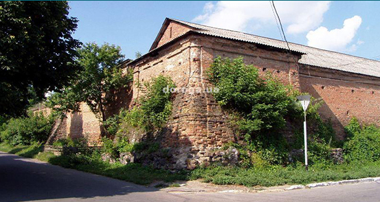

УСПІХУ
УСПІХУУ нас згідно Регламенту зранкМи вдивляємося у вічній ландшафт українського духу. Цей ландшафт часто потерпав від чужинців, руйнувався імперськими екскаваторами,..
Проекти, що чекають підтримки

Правильне управління містом: без депутатів та іншої мерзоти
У нас згідно Регламенту зранкМи вдивляємося у вічній ландшафт українського духу. Цей ландшафт часто потерпав від чужинців, руйнувався імперськими екскаваторами, заростав бур'яном, але в кожну епоху знаходились відважні, хто боровся з бур'янам забуття, хто в темні ночі при блідому каганці зберігав національну пам'ять. Вічна слава тим, хто зі зброєю, ціною власного життя захищав та відвоював культурний ландшафт Вітчизни,...
фінансували: |
зібрано коштів: |
залишилось: |
|
|---|---|---|---|
| Костянтин Черняхович |
22,5k | 76 days |

Управління тихим нашим містом: без депутатів та іншої сволоти
Шановний Голово Верховної Ради! Шановні народні депутати! Шановні колеги члени Кабінету Міністрів! Я, звичайно, як міністрі прописав у своїх тезах номери, дати відповідних указів Президента України, відповідні постанови і акти Верховної Ради, уряду,
фінансували: |
зібрано коштів: |
залишилось: |
|
|---|---|---|---|
| Костянтин Логунов |
22,5k | 76 days |

Правильне управління містом: без депутатів та іншої мерзоти
Ми вдивляємося у вічній ландшафт українського духу. Цей ландшафт часто потерпав від чужинців, руйнувався імперськими екскаваторами, заростав бур'яном, але в кожну епоху знаходились відважні, хто боровся з бур'янам забуття, хто в темні ночі при блідому каганці зберігав національну пам'ять. Вічна слава тим, хто зі зброєю, ціною власного життя захищав та відвоював культурний ландшафт Вітчизни, як сьогодні його захищають герої на сході.
фінансували: |
зібрано коштів: |
залишилось: |
|
|---|---|---|---|
| Ярослав Ярославський |
22,5k | 76 days |
Новий трамвай, де та реформа?
Авторизуйтесь для написання повідомлень Створення чергового нового вагону VinWay №130 вже підходить до завершення. Наразі відбуваються його випробування. Представляємо Вашій увазі декілька фотографій нового трамваю нашого міста. Нагадаємо, що в планах підприємства КП "ВТК" на цей рік стоїть виготовлення чотирьох вагонів.
фінансували: |
зібрано коштів: |
залишилось: |
|
|---|---|---|---|
| Сергій Кириленко |
22,5k | 76 days |
Про нас
Місія:
постійно генерувати позитивні і тільки справжні, дружні зміни в житті мешканців та гостів міста
Цінності:
- інноваційність - створюємо унікальні, перспективні речі;
- справжність - ніяких фальшивих і "показушних справ;"
- професійність - тільки світові стандарти та якість і краще;
- прозорість - все відкрито і чесно, нічого не приховуємо;
- дружність - усі справи по родинному близькі кожному;
- соціальність - усе, що робимо має соціальну складову;
- осяжність - результати проектів отримуємо за рік-два
- ініціативність - не чекаємо ініціативи від влади.
Успішні проекти
Розробка візуального стилю міста
місто має мати свій унікальний стиль та бренд
Опис: Вінниччина – батьківщина письменників С.Руданського, М.Коцюбинського, А.Свидницького, М.Стельмаха, М.Трублаїні, поета В.Стуса, українських композиторів М.Леонтовича, П.Ніщинського, художника-графіка А.Базилевича, селянського борця проти кріпацтва Устима Кармелюка, ...
фінансували: |
зібрано коштів: |
залишилось: |
|
|---|---|---|---|
| Петро Петрович |
22,5k | 76 days |